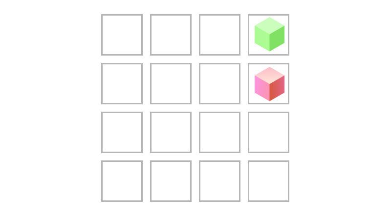

import numpy as npIn this article, I implemented a simple example for value and policy iteration from scratch in Python.
Note
This article contains fewer explanations than usual. It is meant as a reference for other students getting into the subject, who are looking for a simple-as-possible reference implementation. The code can be improved quite a lot, but I wanted to provide these examples nonetheless instead of keeping them on my computer only.
Because implement the concepts from scratch, the only import we’ll use is NumPy.
1 MDP
In order to do value- and policy iteration, we’ll want to model the MDP. In this case, our “world” will be a 2D grid, where each cell has a reward value.
To make life easier, I’ll create a wrapper around the numpy array that contains the data, to introduce some convenient functions that simplify the code.
class Grid:
def __init__(self, matrix):
self.matrix = np.array(matrix)
def get_val(self, state):
r, c = self.coord_2_index(state)
return self.matrix[r, c]
def set_val(self, state, value):
r, c = self.coord_2_index(state)
self.matrix[r, c] = value
def coord_2_index(self, state):
x, y = state
return len(self.matrix) - y, x - 1
def equals(self, grid):
return np.array_equal(self.matrix, grid.matrix)
def display(self):
print(self.matrix)To perform the updates using the Bellman equations, I’ll create another class modelling the MDP.
class Mdp:
def __init__(self, states, actions, gamma):
self.states = states
self.actions = actions
self.gamma = gamma
def T(s1, a, s2):
pass
def R(s1, a, s2):
passOur grid-world example has a few specific transitions (NESW) and a simple reward function. So I’ll create a new class that can model a grid-world of any size provided by the user.
class MdpGrid(Mdp):
def __init__(self, grid, terminal_states, gamma):
self.grid = grid
self.terminal_states = terminal_states
states = [(x, y) for x in range(1, len(self.grid.matrix) + 1) for y in range(1, len(self.grid.matrix[0]) + 1)]
actions = ["N", "E", "S", "W"]
super().__init__(states, actions, gamma)
def T(self, s1, a, s2):
if s1 in self.terminal_states:
return 0
transitions = {
"N": (0, 1),
"E": (1, 0),
"S": (0, -1),
"W": (-1, 0),
}
x, y = s1
x2, y2 = s2
dx, dy = transitions[a] # Deterministic actions assumed
return int((x + dx, y + dy) == s2)
def R(self, s1, a, s2):
return self.grid.get_val(s2)In this notebook, we’ll experiment with a simple 4x4 grid. It has two rewards and ends as soon as the agent collects one of them.

MdpGrid4x4 worldclass MdpGrid4x4(MdpGrid):
def __init__(self, gamma):
matrix = [
[0, 0, 0, 1],
[0, 0, 0, -1],
[0, 0, 0, 0],
[0, 0, 0, 0],
]
grid = Grid(matrix)
super().__init__(grid, [(4, 4), (4, 3)], gamma)2 Value Iteration
\[ V_{k+1}(s) \leftarrow \max_a \sum_{s'} T(s, a, s') \left[ R(s, a, s') + \gamma V_k(s') \right] \]
class ValueIteration():
def __init__(self, mdp):
self.mdp = mdp
def V(self, s, k):
if k <= 0: return 0
values = []
for s2 in self.mdp.states:
for a in self.mdp.actions:
# Calculate components
t = self.mdp.T(s, a, s2)
r = self.mdp.R(s, a, s2)
v2 = self.V(s2, k - 1) if t > 0 else 0
# Insert components into formula
v = t * (r + self.mdp.gamma * v2)
# Save to results
values.append(v)
return max(values)
def run(self, k):
shape = self.mdp.grid.matrix.shape
values = Grid(np.zeros(shape))
for s in self.mdp.states:
values.set_val(s, np.around(self.V(s,k), 2))
return values3 Policy Iteration
\[ V^{\pi_{i}}_{k+1}(s) \leftarrow \sum_{s'} T(s, \pi_{i}(s), s') \left[ R(s, \pi_{i}(s), s') + \gamma V^{\pi_{i}}_{k}(s') \right] \]
class PolicyIteration():
def __init__(self, mdp):
self.mdp = mdp
def policy_evaluation(self, s, pi, k):
if k <= 0:
return 0
value_sum = 0
for s2 in self.mdp.states:
a = pi.get_val(s)
t = self.mdp.T(s, a, s2)
r = self.mdp.R(s, a, s2)
v2 = self.policy_evaluation(s2, pi, k - 1) if t > 0 else 0
value_sum += t * (r + self.mdp.gamma * v2)
return value_sum
def policy_improvement(self, pi, eval_k):
new_pi = Grid(pi.matrix.copy())
for s in self.mdp.states:
action_values = []
for a in self.mdp.actions:
pi_copy = Grid(new_pi.matrix.copy())
pi_copy.set_val(s, a)
v = self.policy_evaluation(s, pi_copy, eval_k)
action_values.append((v, a))
best_action = max(action_values, key=lambda x: x[0])[1]
new_pi.set_val(s, best_action)
return new_pi
def run(self, pi, policy_iterations, value_iterations):
iter_pi = pi
for i in range(policy_iterations):
new_pi = self.policy_improvement(iter_pi, value_iterations)
if new_pi.equals(iter_pi):
break
iter_pi = new_pi
return iter_pi4 Examples
Let’s initialize a new grid world and run policy and value iteration on both of them to see the results.
mdp_4x4 = MdpGrid4x4(0.95)value_iter = ValueIteration(mdp_4x4)
resulting_values = value_iter.run(5)
resulting_values.display()[[0.9 0.95 1. 0. ]
[0.86 0.9 0.95 0. ]
[0.81 0.86 0.9 0.86]
[0. 0.81 0.86 0.81]]policy_iter = PolicyIteration(mdp_4x4)
my_pi_matrix = [["N" for _ in range(4)] for _ in range(4)]
my_pi = Grid(my_pi_matrix)
resulting_policy = policy_iter.run(my_pi, 15, 10)
resulting_policy.display()[['E' 'E' 'E' 'N']
['N' 'N' 'N' 'N']
['N' 'N' 'N' 'W']
['N' 'N' 'N' 'N']]